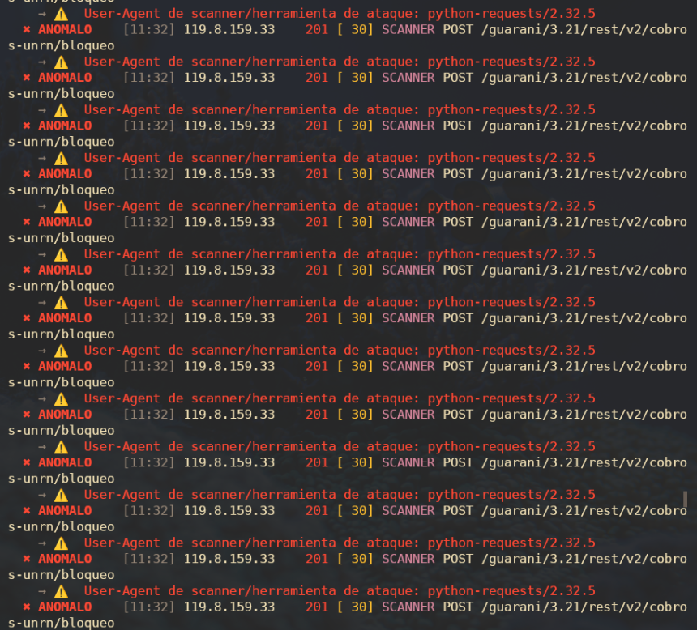
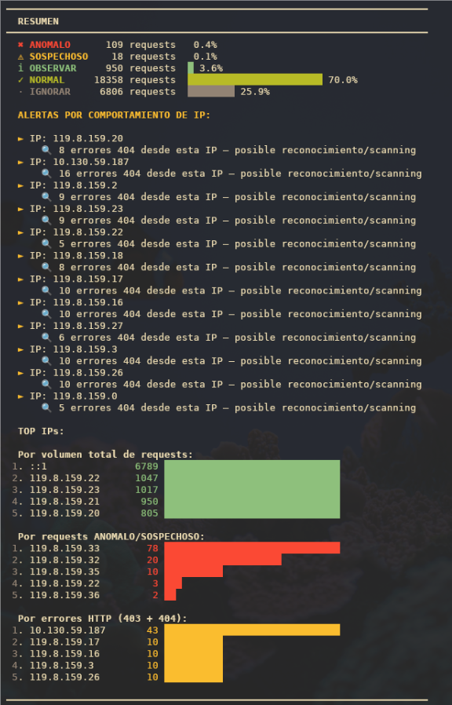
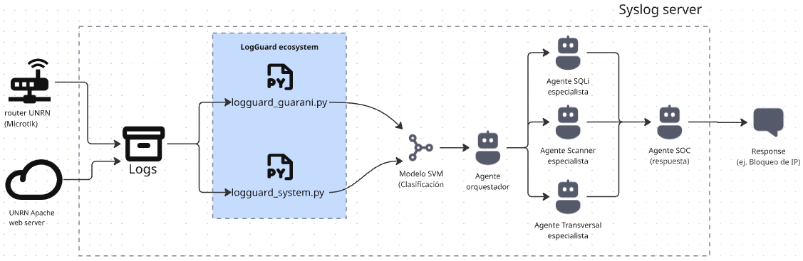

Descripción general
LogGuard Guaraní es una herramienta de análisis estático de logs Apache desarrollada
específicamente para los servidores del SIU Guaraní en la
Universidad Nacional de Río Negro (UNRN). Procesa archivos
access.log en formato Combined Log y clasifica cada request HTTP
considerando el contexto específico de la aplicación.
A diferencia de herramientas genéricas, el sistema incorpora conocimiento del dominio: rutas legítimas del SIU, flujos SSO/SAML, versiones del sistema, bots conocidos y servicios internos. Esto reduce significativamente el ruido y los falsos positivos.
Características principales
- Parseo completo del formato Apache Combined Log
- Clasificación en 5 niveles: IGNORAR NORMAL OBSERVAR SOSPECHOSO ANOMALO
- Detección de SQLi, XSS, RCE/LFI, path traversal, escaneo WordPress, webshells conocidas
- Score de riesgo numérico por request (0–100+)
- Clasificación de tipo de ataque:
INJECTION,PATH_TRAVERSAL,SCANNER,ERROR_ABUSE - Análisis de comportamiento por IP (frecuencia de errores, diversidad de paths)
- Top 5 IPs por volumen, anomalías y errores HTTP
- Exportación a CSV para análisis complementario
- Sin dependencias externas — Python 3.8+ únicamente
Requisitos
# Verificar versión de Python
python3 --version # requiere 3.8+
# Clonar el repositorio
git clone https://github.com/snsanchez/logguard-guarani
cd logguard-guaraniNo requiere pip install ni dependencias externas. Solo biblioteca estándar de Python.
Instalación y uso
Ejecución básica
python3 logguard_guarani.py access.logOpciones disponibles
| Flag | Descripción |
|---|---|
--solo-anomalos | Muestra solo SOSPECHOSO y ANOMALO |
--modo-silencioso | Muestra solo ANOMALO (máxima prioridad) |
--exportar salida.csv | Exporta todos los resultados a CSV |
Ejemplos de uso
# Análisis completo con output en consola
python3 logguard_guarani.py /var/log/apache2/access.log
# Solo alertas críticas (modo silencioso)
python3 logguard_guarani.py access.log --modo-silencioso
# Filtrar y exportar para análisis posterior
python3 logguard_guarani.py access.log --solo-anomalos --exportar reporte.csvEjemplo de salida
========================================================================
LogGuard Guaraní v1.1 — Analizador de Logs Apache (UNRN)
========================================================================
Archivo: access.log
Líneas: 26241 Parseadas: 26241
✖ ANOMALO [11:32] 119.8.159.33 201 [ 80] SCANNER
→ ⚠ User-Agent de herramienta de ataque: python-requests/2.32.5
→ POST /guarani/3.21/rest/v2/cobros-unrn/bloqueo
✖ ANOMALO [22:48] 119.8.159.11 302 [ 50] SCANNER
→ ⚠ User-Agent de herramienta de ataque: Mozlila/5.0 ...
→ POST /alfacgiapi/perl.alfa
------------------------------------------------------------------------
RESUMEN
------------------------------------------------------------------------
✖ ANOMALO 109 requests 0.4%
⚠ SOSPECHOSO 18 requests 0.1%
ℹ OBSERVAR 950 requests 3.6%
✓ NORMAL 18358 requests 70.0%Clasificación de requests
El motor de análisis implementa un árbol de decisión con prioridades estrictas. Las reglas de mayor severidad se evalúan primero; el análisis termina con el primer match. Esto garantiza que un exploit en la URL clasifique como ANOMALO incluso si el user-agent parece legítimo.
| Nivel | Criterio | Acción sugerida |
|---|---|---|
| IGNORAR | Apache dummy connection, favicon.ico |
Descartar |
| NORMAL | 200/304 en ruta conocida del SIU, redirects SSO/SAML | Sin acción |
| OBSERVAR | Bots legítimos, 404 en versiones viejas, servicios internos | Revisar periódicamente |
| SOSPECHOSO | 403 externo, URL larga sin contexto, UA desconocido, 5xx | Revisar manualmente |
| ANOMALO | Exploit/inyección en URL, path traversal, UA de herramienta de ataque, WP scan | Atención inmediata |
Reducción de ruido — contexto del SIU Guaraní
Las siguientes fuentes de ruido se filtran explícitamente para evitar falsos positivos:
- SAMLResponse / SAMLRequest — tokens base64 de 600+ chars en flujos SSO: NORMAL
- Bots documentados — Googlebot, ClaudeBot, meta-externalagent, Expanse/Palo Alto: OBSERVAR
- Versiones viejas del SIU — 404 en
/guarani/3.17/a/guarani/3.20/: OBSERVAR - Servicios internos — IPs de red interna con usuario autenticado generando 403: OBSERVAR
- Apache dummy connection —
OPTIONS * HTTP/1.0desde::1: IGNORAR
Detecciones implementadas
Vectores de ataque web
| Tipo | Función | Patrones detectados |
|---|---|---|
| SQLi / XSS / RCE | detectar_inyeccion() | SELECT, UNION, <script, onerror=, /etc/passwd, cmd= |
| Path Traversal | detectar_path_traversal() | ../, ..\, %2e%2e, ....// |
| WP Scan | detectar_wp_scan() | /wp-login.php, /xmlrpc.php, /wp-admin/, /wp-config |
| Scanner UA | detectar_scanner() | sqlmap, nikto, python-requests, curl/, nuclei |
Caso real: Alfa Shell (APT-33)
/alfacgiapi/perl.alfa con user-agent falsificado (Mozlila/5.0)
fue detectado en preinscripcion.unrn.edu.ar. Este path corresponde a la webshell
Alfa Shell, asociada al grupo APT-33. La combinación de path conocido y error tipográfico
deliberado en el UA es una señal de alta confianza.
Caso real: Ataque a API de cobros
El análisis de gestiong3.unrn.edu.ar reveló un ataque coordinado
usando python-requests/2.32.5 desde múltiples IPs del rango
119.8.159.0/24, ejecutando POST y DELETE contra el endpoint
/rest/v2/cobros-unrn/bloqueo a ~8 requests/segundo durante 25 segundos.
La mayoría retornó HTTP 201 — operaciones aceptadas por el servidor.

Figura 1 — Fragmento de reporte de requests anómalas detectadas en gestiong3.unrn.edu.ar-access.log.Score de riesgo
Cada request recibe un score numérico acumulativo calculado por calcular_score(),
independiente de la etiqueta. Permite priorizar eventos cuando hay múltiples
ANOMALO en el mismo archivo.
El score se muestra en consola entre corchetes junto al status y se incluye como columna en el CSV exportado.
Análisis por IP
analizar_patrones_ip() analiza el comportamiento agregado de cada IP
sobre todos los registros del archivo. Detecta patrones que no son visibles
a nivel de request individual.
| Condición | Alerta generada |
|---|---|
| ≥ 5 errores 404 desde la misma IP | 🔍 Posible reconocimiento / scanning |
| ≥ 3 errores 403 desde IP externa | 🚫 Enumeración de paths |
| ≥ 15 paths distintos accedidos | 🗺 Scanning sistemático |
El resumen final incluye tres rankings Top-5: mayor volumen total de requests, mayor cantidad de eventos ANOMALO/SOSPECHOSO, y mayor cantidad de errores HTTP (403 + 404).

Figura 2 — Ranking Top IPs, 26.241 líneas procesadasReferencia CLI
python3 logguard_guarani.py [-h] [--solo-anomalos] [--exportar-csv] archivo
Argumentos posicionales:
archivo Archivo de log Apache a analizar
Opciones:
--solo-anomalos Muestra SOSPECHOSO y ANOMALO únicamente
--exportar-csv Exporta resultados a archivo CSVExportación CSV
Con --exportar-csv se genera un archivo con todos los requests analizados, incluyendo los campos de la Etapa 1.
| Campo | Descripción |
|---|---|
fecha | Timestamp del request |
ip | IP de origen |
usuario | Usuario autenticado (o -) |
metodo | Método HTTP (GET, POST, DELETE…) |
url | URL completa del request |
status | Código HTTP de respuesta |
bytes | Tamaño de la respuesta |
ua | User-Agent completo |
etiqueta | NORMAL / OBSERVAR / SOSPECHOSO / ANOMALO |
tipo_ataque | INJECTION / SCANNER / PATH_TRAVERSAL… |
score | Score de riesgo numérico |
razones | Razones separadas por | |
Evolución del proyecto
- Abril 2026 — Inicio Colaboración con el área de infraestructura de la UNRN. Se identifican logs de producción del SIU Guaraní como fuente de análisis. Versión inicial: clasificación básica por status code.
-
Abril 2026 — Análisis de logs reales
Análisis de
gestiong3.unrn.edu.ar: se detectan flujos SSO como falso positivo crítico. Se incorpora el contexto del dominio (rutas legítimas, SAMLResponse, versiones viejas del SIU). -
Abril 2026 — Expansión a múltiples servidores
Análisis de
preinscripcion,preinscripcionposgradoykolla. Se identifica la Alfa Shell (APT-33). Se agrega whitelist de bots legítimos (Googlebot, ClaudeBot, Palo Alto Expanse). -
Abril 2026 — Etapa 1
Score de riesgo numérico, clasificación de tipo de ataque, Top IPs en el resumen.
Detección del ataque coordinado contra la API de cobros con
python-requests. - Mayo 2026 — Documentación y paper Short paper académico, README actualizado, licencia GPL v3, documentación web.
Arquitectura futura — LogGuard Ecosystem
LogGuard Guaraní es el primer módulo de una arquitectura más amplia denominada LogGuard Ecosystem, que contempla análisis centralizado de logs de múltiples fuentes institucionales.

Figura 3 — Diagrama de la futura implementación completa de logGuard sobre infraestructura real.Dentro de este ecosistema operarían LogGuard Guaraní y LogGuard System. Los eventos sospechosos detectados serían procesados posteriormente por modelos de clasificación basados en machine learning y coordinados mediante una arquitectura multiagente. Un agente orquestador derivaría cada incidente hacia agentes especialistas en ataques específicos, como SQL Injection, path traversal o reconocimiento automatizado. Finalmente, un agente orientado a operaciones SOC podría ejecutar respuestas automatizadas sobre la infraestructura monitoreada, como generación de alertas, bloqueo de IPs o aplicación de reglas de mitigación.
Roadmap
| Etapa | Estado | Funcionalidades |
|---|---|---|
| Etapa 1 | ✅ Completa | Score de riesgo, tipo de ataque, Top IPs, análisis contextual avanzado |
| Etapa 2 | ⬜ Planificada | Correlación temporal, memoria por IP, detección de bursts, secuencias sospechosas |
| Etapa 3 | ⬜ Planificada | Baseline de comportamiento, correlación de señales, ataques low-and-slow |
| Etapa 4 | ⬜ Planificada | Dashboard de visualización, pipeline modular, integración rsyslog |
Short Paper
Abstract
Palabras clave: ciberseguridad, análisis de logs, Apache, SIU Guaraní, detección de anomalías, OWASP.
1. Introducción
En los últimos años, diversas infraestructuras web de instituciones públicas y educativas en Argentina han sido objeto de ataques automatizados y actividades de reconocimiento, evidenciando la necesidad de fortalecer los mecanismos de monitoreo y análisis de eventos de seguridad.
El problema central reside en el 'ruido' de los logs: URLs extensas (tokens Security Assertion Markup Language/Single Sign-On - SAML/SSO) y user-agents internos que herramientas Security Information and Event Management (SIEM) genéricas suelen marcar como anómalas sin serlo [4]. Siguiendo los principios de seguridad proactiva de OWASP [2], LogGuard Guaraní busca cerrar esta brecha mediante un filtrado contextual.
El proyecto fue desarrollado en colaboración con el área de infraestructura de la UNRN, a partir de logs reales de producción de los servidores gestiong3.unrn.edu.ar, preinscripcion.unrn.edu.ar y preinscripcionposgrado.unrn.edu.ar, entre otros.
2. Metodología y Arquitectura
La detección de ataques en aplicaciones web se fundamenta en marcos de trabajo como MITRE ATT&CK [6] y guías de testing de penetración [3]. Históricamente, la detección de escaneos y scripts automatizados ha evolucionado desde el análisis de puertos [5] hasta el análisis de capa de aplicación (L7). En entornos universitarios, la criticidad aumenta debido a vulnerabilidades históricas en componentes de infraestructura comunes en el stack tecnológico [7].
La herramienta fue desarrollada en Python sin dependencias externas, priorizando portabilidad y simplicidad operativa. El sistema implementa un pipeline compuesto por las siguientes etapas: parseo de logs Apache, análisis contextual, clasificación de riesgo, detección de patrones y generación de reportes.
El motor de análisis utiliza reglas basadas en indicadores definidos por OWASP [3], incluyendo detección de SQL Injection, Cross-Site Scripting (XSS), path traversal, falsificación de User-Agents [9], scanners automatizados y abuso de códigos HTTP 403/404. LogGuard Guaraní incorpora rutas legítimas del SIU, user‑agents esperados y patrones normales de autenticación SSO.
Cada request recibe una etiqueta de criticidad (NORMAL, OBSERVAR, SOSPECHOSO o ANÓMALO) y un score numérico acumulativo. Esto permite priorizar eventos relevantes y reducir el ruido operativo. Cada regla suma puntos independientemente, el score no reemplaza la etiqueta sino que es información adicional.
# Algoritmo 1: score de riesgo acumulativo por request
def calcular_score(url, ua, status, razones):
score = 0
# ── Señales de URL ──────────────────────────────────
if detectar_inyeccion(url):
score += 50 # SQLi / XSS / RCE — máxima prioridad
if detectar_path_traversal(url):
score += 40 # LFI / path traversal
if longitud_url_sospechosa(url):
score += 10
# ── Señales de User-Agent ────────────────────────────
if detectar_scanner(ua):
score += 30 # herramienta de ataque conocida
elif not es_ua_conocido(ua) and ua not in ("-", ""):
score += 10
# ── Señales de status HTTP ───────────────────────────
if status == 403:
score += 15
elif status == 404:
score += 10
elif status >= 500:
score += 20
return score3. Análisis de Resultados e Incidentes
Durante el desarrollo se analizaron logs de producción de la UNRN con volúmenes significativos. En particular, el análisis del archivo de acceso (gestiong3.unrn.edu.ar-access) con 26.241 líneas reveló un incidente crítico de seguridad.
Hallazgos Relevantes: Ataque contra API de Cobros
El 20 de abril de 2026, se detectó un ataque automatizado coordinado contra la API de gestión de cobros en gestiong3.unrn.edu.ar. El ataque fue ejecutado mediante el uso de la librería 'python-requests/2.32.5' distribuida en múltiples direcciones IP del rango 119.8.159.x. El incidente se desarrolló en dos fases críticas:
• Fase 1 (Sondeo): Las IPs .28 y .30 intentaron realizar operaciones de DELETE al endpoint de /desbloqueo, obteniendo errores 500.
• Fase 2 (Ataque Efectivo): Las IPs .33, .35 y .32 atacaron el endpoint /bloqueo con una frecuencia de 8 requests por segundo.
El dato técnico más alarmante fue la obtención de códigos HTTP 201 (Created), lo cual certifica que las operaciones fueron aceptadas y procesadas por la base de datos del SIU Guaraní. La IP 119.8.159.33 concentró 78 eventos anómalos usando el user-agent python-requests/2.32.5, confirmando un script automatizado sin enmascaramiento.
Este hallazgo valida la necesidad de LogGuard Guaraní, ya que este tipo de ataques contra la lógica de negocio suele pasar desapercibido para los firewalls de red tradicionales [5].
4. Limitaciones y trabajo futuro
La arquitectura actual funciona como un analizador offline y no implementa correlación temporal avanzada, aprendizaje automático ni respuestas automatizadas. Como evolución futura, el proyecto contempla una arquitectura integral denominada LogGuard Ecosystem, basada en recolección centralizada de eventos mediante rsyslog. Dentro de este ecosistema operarían LogGuard Guaraní y LogGuard System. Los eventos sospechosos detectados serían procesados posteriormente por modelos de clasificación basados en machine learning y coordinados mediante una arquitectura multiagente. Un agente orquestador derivaría cada incidente hacia agentes especialistas en ataques específicos, como SQL Injection, path traversal o reconocimiento automatizado. Finalmente, un agente orientado a operaciones SOC podría ejecutar respuestas automatizadas sobre la infraestructura monitoreada, como generación de alertas, bloqueo de IPs o aplicación de reglas de mitigación.
5. Conclusiones
LogGuard Guaraní permitió demostrar que el análisis contextual de logs puede mejorar significativamente la detección de anomalías en aplicaciones institucionales. La utilización de conocimiento específico del dominio resultó clave para disminuir falsos positivos y priorizar eventos relevantes. El proyecto constituye una prueba de concepto funcional orientada a futuras implementaciones de monitoreo y respuesta ante incidentes en infraestructuras educativas.
Referencias
- Apache Software Foundation. Apache HTTP Server Project, 2026. httpd.apache.org
- OWASP Foundation. OWASP Top 10 Web Application Security Risks, 2025. owasp.org/Top10/2025
- OWASP Foundation. Web Security Testing Guide, 2023. owasp.org/www-project-web-security-testing-guide
- Splunk Inc. Security Information and Event Management (SIEM) Concepts, 2025. splunk.com
- N. Provos, P. Honeyman. Detecting Stealthy Portscans. USENIX Security Symposium, 2001. usenix.org
- MITRE. ATT&CK Framework, 2026. attack.mitre.org
- NIST. Apache Log4j Vulnerability (CVE‑2021‑44228) Documentation, 2021. nvd.nist.gov
- SIU. Guaraní – Sistema de Gestión Universitaria, 2026. siu.edu.ar
- OWASP Foundation. WSTG-INPV-01: Testing for Reflected Cross Site Scripting — Patrones de inyección en parámetros HTTP, 2021. owasp.org/WSTG-INPV-01